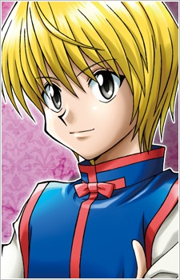

Main Characters
Gon Freecs
Description
Gon is an athletic, rustic, and friendly boy who is searching for adventure. Also, he is not very good at math. However, having spent a lot of time in the woods as a child, he is very good with animals. Gon's determination and talent lead to both potential allies and potential enemies trusting in him and taking his side. He has inhuman senses; Gon has a heightened sense of smell almost like a dog's, he also has very good vision, as well as having a very keen taste.
Killua Zoldyck
Description
Initially, Killua is introduced as a character who seems similar to Gon; cheeky, cheerful, and full of mischievous ideas. However, his ruthlessness and aptitude in killing shows the other side of him — deadly and bloodthirsty. Tortured since birth, Killua has been conditioned to possess extreme tolerance for poison, electricity and pain. He possesses extraordinary agility and strength that makes him a one-man killing machine — definitely not one to be trifled with.
Leorio Paradinight

Description
Leorio is passionate about his ambitions to become a Hunter and help the poor, although he is a self-centered, narcissistic man in doing so, wanting to earn money once he becomes a licensed hunter or "abusing" his powers to save his friend should he gets elected as a Chairman. Comically, he serves as a "big brother" of the group, being the overprotective, hot-headed, and cynical individual and would do anything to protect his friends.
Kurapika
Description
Kurapika is an intelligent individual, possessing vast knowledge. He is reticent; not one to open up to people easily and quite judgmental. His distance from others initially keeps him level-headed and moralistic, but his heart has been poisoned with sadness and hatred. Having been traumatized from losing everyone he loved at the age of twelve, Kurapika closes his heart to new people and remains introverted as to stay focused on his goal.